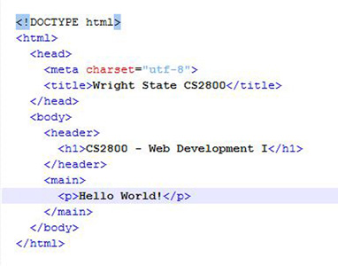
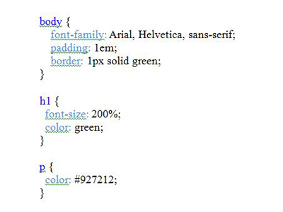

-
Web Development Basics
Web developers focus on how a website works and how the users of the site interact with it. Web applications may be developed as client-side or server-side applications. Client-side development, the focus of this course, means that the code to render the page is downloaded to the user's machine; server-side applications require processing through the server on which the page is stored. This section explains the processing of web pages in more detail and introduces the tools used to create, test, and deploy web pages.(textbook chapters 1, 2, and 19)
-
Effective Web Design
While the focus of this course is web development, an understanding of web design is an important component. This section covers basic design guidelines and tips to create an effective website -- one in which users can quickly and easily obtain the information they need. Usability, accessibility, the advantages of a mobile-first approach, and an overview of responsive design techniques are included in this section. (textbook chapters 1 and 18)
-

HTML for Structure
HTML (HyperText Markup Language) is the language used to describe the content of a web page. HTML uses tags to describe the different types of content, such as headers, footers, and links. This section explains the tags used to define the HTML document, as well as the tags used for coding specific text elements, images, lists, links, tables, forms, audio, and video. The use of HTML5 section elements, used to give semantic meaning to the content, will also be introduced. (textbook chapters 3, 7, 8, 9, 10, 11, 12
-

Styling Web Pages with CSS
CSS (Cascading Style Sheets) are used to format the elements of a web page and to define the layout of a page, independently from the HTML code. This section explains how to use CSS to adjust the font, color, margins, and spacing of items on the page. This section includes the use of selectors, the box model, columns, and responsive design (designing web pages so that they are delivered in variable sizes for desktops, tablets, and mobile devices). (textbook chapters 4-14)
-
Enhance your site with JavaScript
JavaScript is a programming languages that is used to add interactivity to a web site. jQuery is a library containing JavaScript code for common tasks. This section describes how to use jQuery for image, email, and slide show applications; how to use common jQuery widgets such as tabs and accordions; and how to use jQuery Mobile to build mobile websites.(textbook chapters 15-17)
{kind=link}